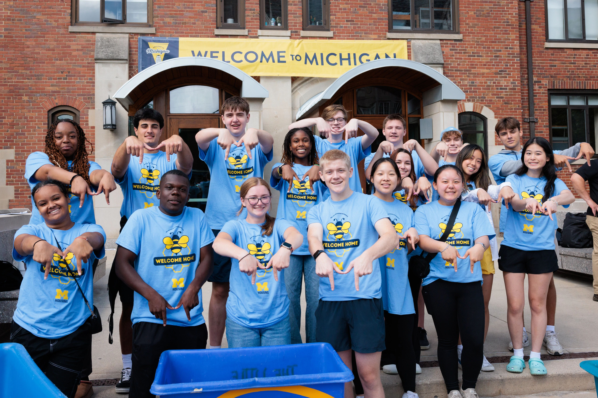

Am I a first-generation college student?
At the University of Michigan, undergraduates and graduate students are considered first-generation college students if neither parent or guardian has completed a 4-year college or university degree.

This definition includes students with other family members (siblings, cousins, grandparents, etc.) who have completed a four-year degree.

First-Generation Gateway Hours and Location:
Summer Hours: Monday – Friday 9:00 – 3:00 PM
Location:
Third floor of the Student Activities Building in the Office of Academic Multicultural Initiatives.
Questions for the First-Gen Gateway Staff? Email us at firstgeninfo@umich.edu